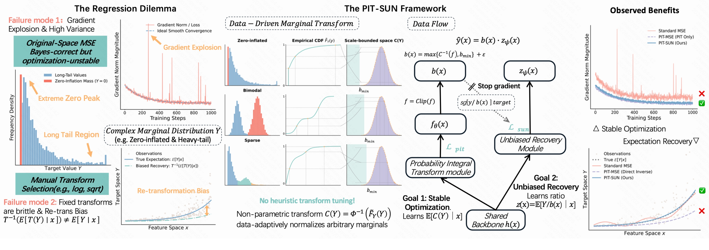
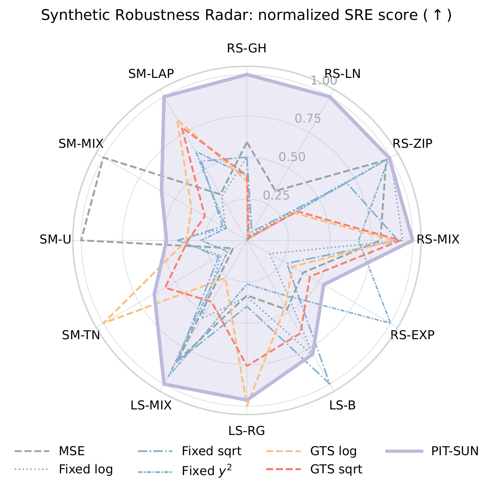
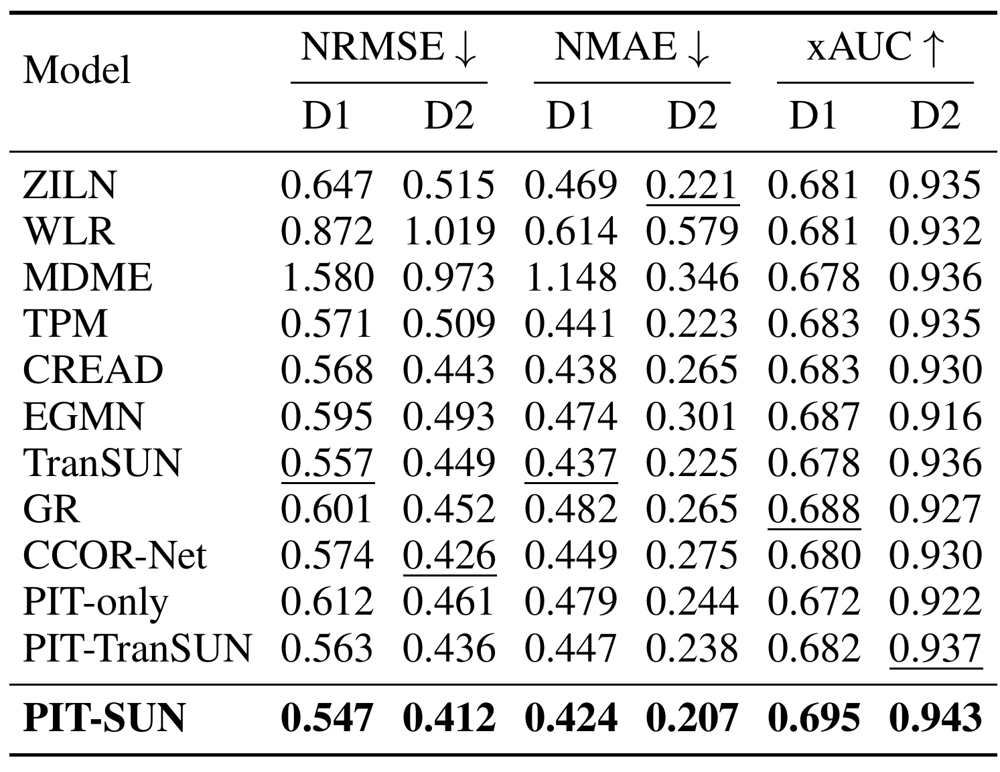
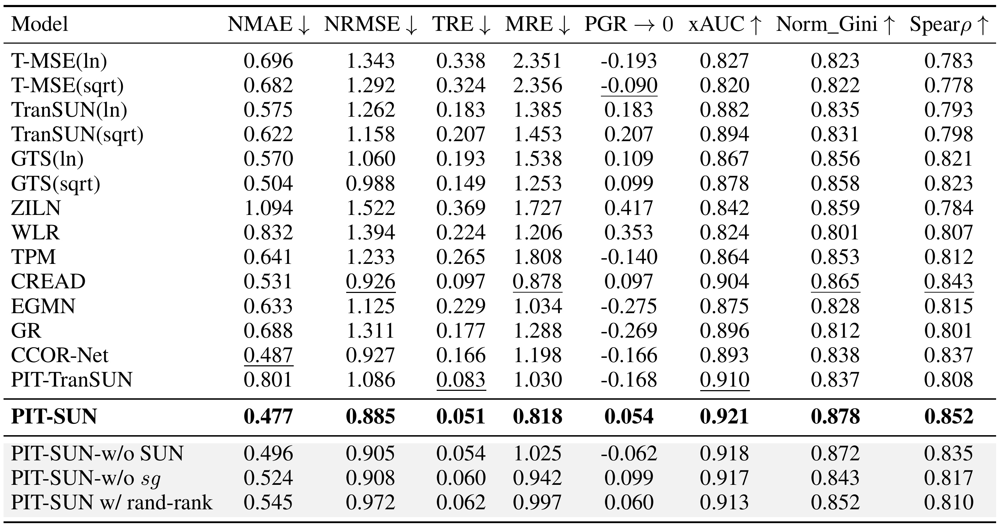
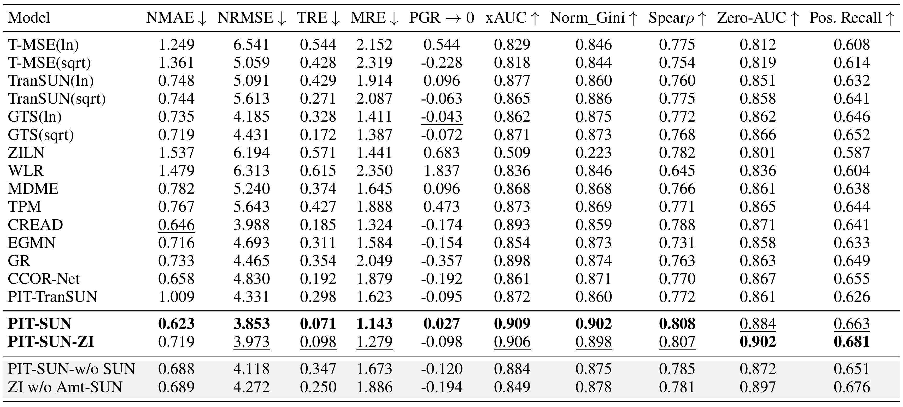
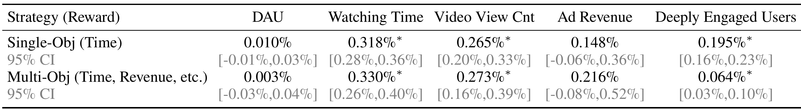
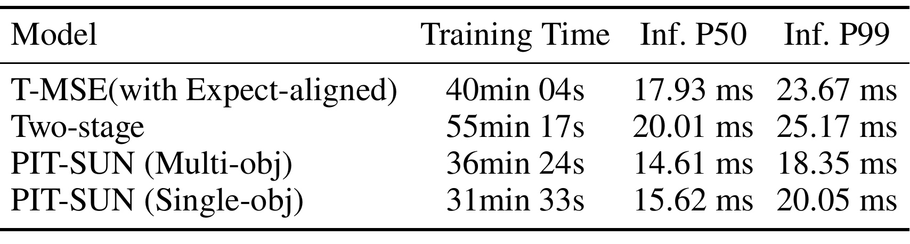
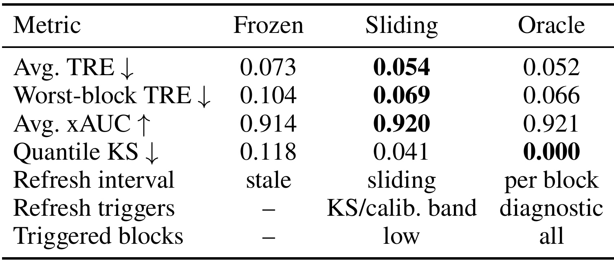

PIT-SUN：用经验边际坐标稳定推荐回归，并恢复原空间条件期望
这篇论文由 Mingyu Zhao、Zhaohan Li、Zhenxiong Miao、Xu Zhang、Dewei Leng、Yanan Niu 与 Kun Gai 完成，一作主要机构为中国人民大学；其余作者来自快手科技，工作完成于一作的快手实习期间。论文于 2026 年 7 月 9 日公开，唯一论文入口为 arXiv:2607.08202。作者把观看时长、GMV、LTV 等值导向任务统一看成复杂边际下的非负回归：训练时先进入经验 PIT 定义的有界 normal-score 坐标，再通过下界稳定的 inverse-quantile base 和乘法 SUN 分支恢复原空间条件期望。摘要页与 PDF 未核验到独立项目或代码链接；附录只表示将提供合成 benchmark 与训练循环的参考实现，因此当前开源状态仍应视为未核验。
原空间 MSE 虽然在总体上对齐条件期望，但重尾、零膨胀和多峰标签会让有限样本梯度被极端值或零平台主导；任何有用的非线性尾部压缩若只做直接逆变换，又无法对所有条件分布保持期望一致。
1. 背景和问题
值导向推荐并不只判断用户会不会点击，还要估计一次曝光可能带来的连续业务量。观看时长决定内容消费深度，GMV 影响预算与流量分配，LTV 进入长期用户价值和营销决策。这些标签与 CTR 的伯努利目标不同：它们常在零点聚集，正值部分跨越多个数量级，还可能因内容类型、用户阶段或活动场景形成多个峰。若直接在原尺度上训练 MSE，平方误差会让极少数大值贡献压倒多数普通样本；零值很多时，模型又容易收缩到接近总体均值或低值区域，尾部被系统性压小。问题不是 MSE 的总体最优目标错了，而是有限数据和有限优化预算下，正确目标对应的梯度几何很差。
设特征为 (X)，非负标签为 (Y)，业务真正需要的是 (m(x)=mathbb E[Y\mid X=x])。这个量可直接用于价值排序、预算约束和多目标加权。原空间 MSE 的 Bayes 最优解正是 (m(x))，因此具有“期望一致性”。但在工业数据上，理论目标正确不等于训练过程可靠：一个极端 GMV 样本的梯度可能比大量普通样本高几个数量级；高价值尾部样本少，模型很难同时学稳主体和尾部；零平台还会产生大量几乎相同的监督信号。作者把这种现象概括为 stability–expectation dilemma：原尺度保住了目标，变换尺度改善了优化，两者却不能靠一次非线性变换自动兼得。
工程上常用 (log(1+y))、平方根或 Box–Cox 压缩标签，再在预测后取逆变换。这确实缩小了尾部幅度，却改变了 MSE 在总体上拟合的对象。训练得到的是 (mathbb E[T(Y)\mid x])，推理输出则是 (T^{-1}(\mathbb E[T(Y)\mid x]))；除非逆函数是仿射，否则它一般不等于 (mathbb E[Y\mid x])。这不是选错了 log 或 sqrt，也不是多加一个 smearing 常数就能对所有条件分布解决的实现问题，而是期望与非线性函数不交换。对推荐系统而言，偏差最终会表现为总价值不准、尾部系统性缩水或不同人群的价值尺度错位，即使 transformed-space loss 看起来很好。
PIT 似乎提供了更自然的变换：用训练标签的经验 CDF 把任意边际映射为 uniform，再经标准正态逆 CDF 得到 normal score。它不需要人工决定使用 log 还是 sqrt，且保留边际顺序。不过 PIT 本身仍然没有解决期望目标。条件均值的 normal score 再查逆分位数，只得到一个“与局部边际秩相配的典型原尺度值”，不是条件分布的原空间均值。尤其在零膨胀、离散并列值与极端尾部处，经验逆分位数的局部斜率很大，CDF 估计误差和 clipping 误差都会被放大。把 PIT 预测直接 inverse lookup，仍然是非线性直接逆变换；它改善坐标，却没有获得期望一致性。
论文的切入点因此不是再发明一个标量变换，而是定义一套“经验边际恢复闭环”。同一张经验 CDF/quantile table 同时承担四个角色：生成有界 normal-score 监督坐标；把预测坐标查回局部原尺度；构造比例恢复的正底座；在线监控边际漂移。然后另设一个 SUN 比例头学习 (Y/b(x))，最终用乘法回到原空间。这里的关键区分是：inverse-quantile 值只当 conditioning base，不把它冒充最终预测；真正的条件均值由比例头与底座的乘积恢复。
作者希望同时回答四个问题。第一，为什么任何有用的非线性压缩都不能靠直接逆变换普遍保期望；第二，经验 PIT 怎样在不人工选变换的情况下把重尾监督压到有界坐标；第三，为什么 inverse-quantile base 加 (b_{\min}) 能让比例恢复稳定；第四，依赖经验表的系统遇到节假日、促销或流量结构变化时如何知道该刷新。论文给出的证据跨度很大，包括已知条件均值的合成分布、两个公共数据集、工业离线时长/GMV、连续七天线上 A/B，以及训练延迟和 CDF drift 诊断。这种覆盖使它更像一套可部署回归方案，而不是只在一个指标上调优的 loss trick。
2. 方法
PIT-SUN 的核心不是 PIT 坐标本身，而是坐标、底座、SUN 恢复和漂移监控的闭环。
2.1 为什么直接逆变换不可能普遍保持期望
符号解释：(T) 是 log、sqrt、PIT normal score 等单调变换，(f) 是回归器，(f_T^*) 是给定 (x) 时 transformed MSE 的总体最优预测。这个公式说明训练过程没有“学错”：它准确地学习了变换后标签的条件期望；偏差发生在把这个期望送入 (T^{-1}) 的下一步。
符号解释：(g) 是逆变换，等式左边是先求 transformed mean 再逆变换，右边是原标签的条件均值。取 (T(Y)) 只在两个点上分布，改变两点混合权重，就要求 (g) 对任意凸组合满足 Jensen 等号；在可测、局部有界等温和条件下，(g) 只能在对应区间为仿射函数。仿射逆函数又不能提供真正的非线性尾部压缩。因此，“既靠非线性坐标压尾，又靠同一函数直接逆回并对所有分布保期望”在结构上不可兼得。
符号解释：(b(x)>0) 是由特征条件确定的 recovery base，(z(x)) 是比例回归头，(widehat y(x)) 是原空间预测。因为 (b(x)) 在给定 (x) 后是常数，(mathbb E[Y/b(x)\mid x]b(x)=m(x))。这一步保期望不依赖底座等于真实均值；任何正、固定且可控方差的底座在总体上都成立。底座选择影响的是比例标签是否容易学、方差是否爆炸，而不是总体最优点是否为条件均值。
2.2 经验 PIT：有界 normal-score 坐标与逆分位数查表
符号解释：(widetilde F_Y) 把经验分位限制在 ([\delta,1-\delta])，(C(y)) 是 normal-score 标签。于是 (|C(y)|\le a_\delta=\Phi^{-1}(1-\delta))，无论 (y) 的原始尾部跨多少数量级，PIT 分支每个样本的监督幅度都被限制在有限区间。单调经验 CDF 仍保留边际顺序，所以高价值样本在新坐标里仍排在低价值样本之后。
符号解释：(w) 是 normal-score 坐标，(Phi(w)) 将其还原为边际分位，(widehat F_Y^{-1}) 查出训练边际上对应的原尺度数值。这个逆查表没有新模型参数，查表容量 (K) 决定分位近似精度与内存/查询开销。它给出的是与预测 rank 对应的原尺度锚点，不是最终条件期望。
符号解释：(f_\theta) 是 PIT 回归头，(\theta) 包括共享 backbone 与该头参数。由于目标被 clipping，单样本梯度不再随原始 (Y) 的绝对幅度无限增长。这里优化的是 (\mathbb E[C(Y)\mid x])，而不是声称 (C^{-1}(f_\theta(x))) 已经等于 (m(x))。这种克制是 PIT-SUN 与 PIT-only 的根本差别。
符号解释：(\widehat F_Y(y^-)) 是跳跃前的累积概率，括号内是值 (y) 的并列质量，(\rho) 决定在对应分位区间内取点。默认 deterministic mid-rank 使同值标签映到区间中点，randomized rank 只是可选诊断。这样零值不必靠手工加噪或 (\log(1+y)) 打散，但 PIT 仍只提供边际坐标。
2.3 逆分位数底座与乘法 SUN 期望恢复
符号解释：(\bar f) 是有界预测坐标，(b_{\min}) 通常从正标签候选分位数中用验证集选择，(\varepsilon>0) 防止数值除零。inverse-quantile 让底座随样本的局部边际 rank 变化，比全局常数或全局正均值更贴近样本尺度；(b_{\min}) 又避免零平台附近查得过小分母。它不是对输出做硬截断，而是控制恢复标签 (Y/b(x)) 的条件数。
符号解释：(z_\psi) 是非负比例头，(operatorname{sg}) 表示 stop-gradient。前向计算仍使用当前 (b(x))，但 (L_{\mathrm{SUN}}) 不通过 inverse lookup、PIT clipping 或 (b_{\min}) floor 反向更新 PIT 路径。否则高方差的比例残差会反过来扭曲本应保持边际几何的 (f_\theta)，让“坐标头负责稳定、比例头负责恢复”的职责混在一起。
符号解释：(z^*) 是 SUN 平方误差的总体最优比例，方差界来自 (b(x)\ge b_{\min}+\varepsilon)。乘法 SUN 负责恢复条件期望，(b_{\min}) 则负责把比例标签方差限制在可训练范围；两者解决的是不同层次的问题。需要注意，定理假设给定 (x) 时底座固定；神经网络联合训练中 (b(x)) 会跨 epoch 改变，因此 stop-gradient 只是让每次 recovery update 近似满足固定底座解释，不等于宣布整个有限样本训练过程无偏。

Figure 1 左侧把两种失败放在同一坐标系：原空间 MSE 对 Bayes 目标正确，但长尾和零峰造成梯度尖峰；手工非线性变换压平幅度，却出现 re-transformation bias。中间三行用 zero-inflated、bimodal、sparse 三种形状说明经验 CDF 不依赖预选 log/sqrt，都会转为近似 normal-score 坐标；绿色区域标出 (b_{\min}) 对 inverse-quantile base 的稳定作用。右侧数据流更关键：共享 backbone 同时连接 PIT 头 (f_\theta) 与比例头 (z_\psi)，底座 (b(x)) 由前者查表得到，(Y/b(x)) 监督到后者的路径设置 stop-gradient，推理再做 (b(x)z_\psi(x))。图中“稳定优化”和“期望恢复”是两个不同目标，PIT-only 只能覆盖前者；完整 PIT-SUN 才把两条链闭合。
2.4 训练、推理、零膨胀扩展与 CDF 漂移闭环
符号解释：(lambda) 控制坐标学习与比例恢复的权衡；训练时两个损失共享表示，但 SUN 对底座路径停梯度，推理时不再需要标签，只执行 PIT 头、clip、quantile lookup、比例头和一次乘法。对非负目标，比例头使用 softplus 或 clipped ReLU，保证最终值不为负。算法先离线构建经验表，再按 minibatch 同时算 (C(y))、(b(x)) 和比例标签，不需要为每个业务手工挑变换族。
极端零膨胀场景可以启用 PIT-SUN-ZI：hurdle 分支估计 (p(x)=P(Y>0\mid x))，正样本上的 PIT-SUN 估计 (mu_+(x)=E[Y\mid x,Y>0])，最终输出 (p(x)\mu_+(x))。这有利于独立监控 zero occurrence 与 positive recall，但不是默认就比单轨模型更好；发生概率误差与正值均值误差会相乘，且正值金额分支仍需要 SUN 才能保持校准。论文把 ZI 作为运营诊断扩展，而不是把所有零值业务都强制拆成两阶段。
部署中 empirical table 不是训练后永久冻结的常数。流量季节性、促销和供给变化会改变标签边际，旧 CDF 会让同一个 normal score 对应错误的原尺度分位。论文并行维护 recent shadow table，计算 active table 与 shadow table 的 quantile KS，并联动 worst-block TRE、xAUC 与 bucket calibration。验证窗口先拟合一个业务 operating band；KS 离开区间或 bucket calibration 触发护栏时缩短刷新周期或重建表。这里没有可跨业务复制的固定 KS 阈值，监控量也必须只使用因果可得的近期流量，避免把未来测试标签泄漏进 lookup。
3. 实验结果
3.1 合成边际：先验证条件均值恢复而非只看排名
实验从十二个合成监督回归数据集开始，训练/测试规模为 80,000/20,000，特征维数为 8，且生成器保留已知条件均值。边际覆盖右偏 Gamma、lognormal、zero-inflated Poisson、mixture、exponential，左偏 mixture、beta、reflected gamma，以及 symmetric truncated normal、uniform、mixture、Laplace；其中同时加入零膨胀、异方差和多峰。因为 oracle conditional mean 已知，Signal Relative Error 可以直接衡量聚合预测信号相对真实信号的偏差，避免只用 rank 指标掩盖期望恢复失败。

Figure 2 把每个数据集上的 SRE 归一化成“越外越好”的雷达轴。紫色 PIT-SUN 在十二个方向都接近外圈，尤其在右偏 Gamma、lognormal、zero-inflated、mixture、左偏 mixture/reflected gamma 和对称 Laplace 上保持连续轮廓；固定 log、sqrt、平方变换和 GTS 变体则在某些分布较强、换到另一种形状突然塌陷。关键不是 PIT-SUN 在某一根轴的最大领先，而是同一经验规则不需事后选择变换。附录完整数值进一步给出 PIT-SUN 平均 SRE 0.0191、平均排名 1.92、最差排名 4；允许按数据集事后挑恢复变换的 oracle recovery 平均 SRE 0.0249、平均排名 1.83。PIT-SUN 接近这个不可部署 oracle 的排名，却没有观察测试分布后选变换，正好支撑“经验边际 closure 取代人工变换选择”的主张。
这个结论仍有边界。合成生成器明确给定 (mathbb E[Y\mid X])，因此非常适合检验期望一致性；但八维手工噪声族无法覆盖真实推荐中的选择偏差、反馈回路和非平稳曝光。雷达图也使用 normalized SRE，适合比较轮廓，不宜从半径直接读绝对业务误差。因而它证明的是不同边际形状下恢复机制稳定，不是证明真实线上所有分布漂移都已解决。
3.2 公共数据：CIKM16 与 DTMart 的误差—排序同时改善
公共 benchmark 包括长尾观看时长 CIKM16 和稀疏交易金额 DTMart。比较对象既有 ZILN、EGMN 等分布模型，也有 TPM、CREAD、GR、CCOR-Net 等结构化回归，以及 TranSUN、PIT-only、PIT-TranSUN 等最接近的方法。指标同时报告 NRMSE、NMAE 和 xAUC；前两者检查原空间点误差，xAUC 检查连续高价值目标的 pairwise ordering。论文报告多随机种子均值并做 paired test，表中比较标注 (p<0.05)。

Table 2 中，PIT-SUN 在 D1/D2 的 NRMSE 分别为 0.547/0.412，NMAE 为 0.424/0.207，xAUC 为 0.695/0.943，六个单元格均为表中最优。与 PIT-only 相比，D1 的 NMAE 从 0.479 降到 0.424、xAUC 从 0.672 升到 0.695；与只把 empirical PIT 插入 TranSUN 且使用裸 inverse lookup 的 PIT-TranSUN 相比，D2 NRMSE 从 0.436 降到 0.412，NMAE 从 0.238 降到 0.207。这个对比很有辨识力：如果收益只来自 PIT 坐标，PIT-only 或 PIT-TranSUN 应已接近完整方法；实际差距说明 lower-bounded base 与乘法 recovery 共同贡献。
表中也提醒我们不要只按单个指标排名。例如 CCOR-Net 在 D2 NRMSE 达到 0.426，接近强基线，但其 NMAE 0.275 明显高于 PIT-SUN 的 0.207；TranSUN 在 D1 NRMSE/NMAE 为 0.557/0.437，点误差较强，xAUC 却只有 0.678。PIT-SUN 的价值在于三类指标同向，而不是牺牲原空间校准换排序。公共数据的限制是论文没有在主文给出完整特征预处理和生产级吞吐；当前更适合把结果视为跨域可迁移证据，而非直接复现承诺。
3.3 工业离线：Dwell Time、零膨胀 GMV 与组件职责
Dwell Time 表覆盖八类指标：NMAE/NRMSE 是点误差，TRE/MRE/PGR 检查不同口径的校准与有符号偏差，xAUC、Normalized Gini、Spearman (\rho) 检查排序。PIT-SUN 的 NMAE 0.477、NRMSE 0.885、TRE 0.051、xAUC 0.921、Gini 0.878、Spearman 0.852 均为表中最佳，PGR 0.054 接近“越接近零越好”的目标。更重要的是，表里放入了三种紧贴方法链的诊断：去掉 SUN、去掉 stop-gradient、使用 randomized rank。

Table 3 显示 PIT-TranSUN 的 NMAE 0.801、TRE 0.083，说明经验 PIT 加裸 inverse lookup 会让比例标签在小分母区失稳；完整 PIT-SUN 把两者降到 0.477/0.051。去掉 SUN 后 NMAE 0.496，看似只小幅变差，但 MRE 从 0.818 恶化到 1.025、PGR 从 0.054 变为 -0.062，证明坐标稳定不等于原空间恢复完整。去掉 stop-gradient 后 NMAE/TRE 为 0.524/0.060，xAUC 从 0.921 降到 0.917、Spearman 从 0.852 降到 0.817；比例残差反向干扰 PIT 几何的风险在排序一致性上尤其明显。random-rank 的 0.545/0.062/0.913 也弱于 mid-rank 默认值，说明对工业 ties 随机打散并非免费增益。
GMV 比 Dwell Time 多出 Zero-AUC 和 positive recall，借此区分“是否发生交易”与“发生后的金额”。完整单轨 PIT-SUN 的 NMAE 0.623、NRMSE 3.853、TRE 0.071、xAUC 0.909、Gini 0.902、Spearman 0.808，仍在主要 value 指标上最好。PIT-SUN-ZI 把 Zero-AUC 从 0.884 提升到 0.902、Pos. Recall 从 0.663 提升到 0.681，却让 NMAE/TRE 退化到 0.719/0.098。这个结果符合方法定位：显式 hurdle 分支增强 occurrence diagnostics，但发生概率与正值金额两个误差会共同影响端到端期望。

Table 4 最容易被误读为“ZI 版更强”，因为 Zero-AUC 与 positive recall 两列加粗在 PIT-SUN-ZI；但从值导向决策看，单轨 PIT-SUN 在 NMAE、NRMSE、TRE、MRE、PGR、xAUC、Gini、Spearman 八列领先。ZI w/o Amt-SUN 的 Zero-AUC 仍有 0.897、Pos. Recall 0.676，看似 occurrence 端可用，整体 TRE 却恶化到 0.250，说明把零/正拆开并不能替代正金额分支的 expectation recovery。实际部署应由目标决定：若运营必须单独监控是否发生，保留 PIT-SUN-ZI 的诊断价值；若主要关心预算和总价值校准，默认单轨 PIT-SUN 的证据更强。
附录的 (b_{\min}) 敏感性与该结果相互印证。GMV 不设 floor 时 Ratio Var 为 43.6、P99.9 为 192.4；选择正样本 P10 后降到 8.9/41.6，同时 NMAE 由 1.009 降到 0.623、TRE 由 0.298 降到 0.071。继续把 floor 提到 P30，方差仍降到 8.1、P99.9 降到 36.8，但 floor-active fraction 升到 0.238，NMAE/TRE 反弹到 0.647/0.101。它清楚展示了 lower floor 的方差—偏差权衡：过低会分母坍塌，过高会抹平局部 rank 对应的真实尺度。
3.4 七日线上 A/B 与端到端开销
线上实验部署在激励分配系统，模型预测复杂连续目标以指导预算约束下的策略。作者报告连续七天相对 lift，并用用户级 bootstrap 给出 95% CI。单目标时长配置的 watching time +0.318%、video view count +0.265%、deeply engaged users +0.195%，区间分别为 [0.28%,0.36%]、[0.20%,0.33%]、[0.16%,0.23%]，均不跨零；multi-object 配置对应 +0.330%、+0.273%、+0.064%，也标注显著。

Table 5 必须按置信区间而不是 lift 正负来读。DAU 在两种策略下只有 +0.010% 和 +0.003%，CI 分别是 [-0.01%,0.03%] 与 [-0.03%,0.04%]；Ad Revenue 虽报告 +0.148% 和 +0.216%，CI 为 [-0.06%,0.36%] 与 [-0.08%,0.52%]，都包含零。因此可支持的结论是 engagement 指标显著提升，DAU 与广告收入护栏稳定，商业收入只有方向性正值，不能写成显著增长。另一个值得注意的差别是 multi-object 的深度参与提升只有 +0.064%，低于 single-object 的 +0.195%；多目标混合并非所有参与指标都同步放大，权重和预算耦合仍需单独分析。
线上可行性还取决于 quantile lookup 和双头是否拖慢高 QPS 服务。论文把 PIT-SUN multi-object、single-object 与 Expect-aligned T-MSE、two-stage 做同环境比较。前者训练 36 分 24 秒，推理 P50/P99 为 14.61/18.35 ms；后者训练 31 分 33 秒，P50/P99 为 15.62/20.05 ms。对照的 Expect-aligned 为 40 分 04 秒与 17.93/23.67 ms，two-stage 为 55 分 17 秒与 20.01/25.17 ms。

Table 6 说明 empirical table 并未在该系统里形成可见的延迟瓶颈；multi-object 的 P99 比 Expect-aligned 低 5.32 ms，比 two-stage 低 6.82 ms。single-object 训练最快，但其 P50/P99 略高于 multi-object，说明差异不能只由头数量解释，可能还受 batch、目标配置和服务图优化影响。论文没有给出内存占用、表更新 I/O、CPU/GPU 利用率或不同 (K) 下的线上 Pareto，因此“轻量”目前只得到这组训练与延迟表支持，不能外推为任意框架都会加速。复现时还需固定硬件、batch、编译优化和请求分布，否则绝对毫秒不可比；还应单独压测表刷新期间的尾延迟。
3.5 CDF 漂移：把经验表纳入生产监控
依赖训练边际的最大部署风险是表过期。作者把 Dwell Time 测试期按时间切成连续 blocks，固定模型，仅比较三种 table policy：从最早 block 冻结的 stale table；用近期因果可得流量更新的 sliding-window table；每个当前 block 重建、只用于诊断上限的 oracle table。Quantile KS 衡量 active table 与 recent shadow table 的分位差异，TRE 和 xAUC 检查这种差异是否已传到业务预测。

Table 21 中 frozen 的 Avg TRE/Worst-block TRE 为 0.073/0.104，sliding 降到 0.054/0.069，已接近 oracle 的 0.052/0.066；平均 xAUC 从 0.914 回升到 0.920，也接近 oracle 0.921。Quantile KS 从 frozen 的 0.118 降到 sliding 的 0.041，oracle 因使用当前 block 为 0。这里 oracle 不能上线，因为它使用当前块标签，只是判断 sliding 仍有多少可缩小空间。更重要的是，表中 refresh trigger 写的是“KS/calibration band”，不是固定阈值；验证窗口需要先学习 KS 与 worst-block TRE 的关系，再在生产中以 bucket calibration 作为第二护栏。
这个实验把 one empirical marginal table 的第四个角色落到了操作层：它不是不可见的预处理参数，而是有版本、有新鲜度、有 shadow 对照、能回滚和刷新的一等部署对象。冻结表退化集中在 quantile discrepancy 最大的 block，也说明监控只看全局平均 loss 不够；团队应把 CDF 版本、构建窗口、(K)、(delta)、(q_b)、Quantile KS、floor-active fraction、ratio high percentile 与分桶 TRE 同时记录。论文尚未公开触发 block 数和真实流量规模，故不能把“low”解释成具体频次，但控制回路本身具有清晰可迁移性。
4. 总结
4.1 我的判断
PIT-SUN 最有价值的不是把 PIT 换成一个新名字，而是把三个常被混淆的问题拆开：normal-score 坐标负责稳定梯度，inverse-quantile 只负责提供局部原尺度底座，乘法 SUN 负责恢复条件期望。Theorem 1 说明非线性直接逆变换为何不可能普遍保期望；固定底座定理说明乘法恢复为什么在总体上成立；(b_{\min}) 方差界和 stop-gradient 消融则把理论条件连接到可训练系统。合成、公共、工业离线、线上 A/B 与 drift monitor 五层证据互相补位，尤其 PIT-only、PIT-TranSUN、w/o SUN、w/o sg 这些紧贴机制的对照，使“完整 closure 而非单一 PIT”这一主张较有说服力。
对推荐工程，最直接的落点是观看时长、GMV、LTV、付费金额和多目标 reward 等连续值头。实现时应把 CDF/quantile table 当成版本化模型资产：严格只用训练或因果可得滑窗标签构建；保存 (delta)、(K)、正值 (q_b)、(lambda) 与 ties 策略；训练日志记录 ratio variance、P99/P99.9、floor-active fraction；线上同时观察 quantile KS、分桶 TRE 和 xAUC。若只复制两个 loss 而没有表的新鲜度监控与 floor 选择，实际上没有复现论文所说的 deployable closure。
4.2 局限、复现建议与后续跟进
局限至少有五项。第一，expectation-consistency 是固定正底座下的总体最优性质，联合神经训练、有限容量、正则化和 stop-gradient 近似仍会带来估计误差，不能把它写成有限样本严格无偏。第二，经验 CDF 是全局边际；稳定子群的尺度和稀疏度差异很大时，global table 可能伤害少数群体，group-wise 扩展又面临尾部样本不足。第三，工业特征、样本规模、流量、生产代码和精确刷新阈值匿名，公共数据虽补强可迁移性，仍不能完整复刻线上链路。第四，线上实验只有七天，DAU 与广告收入 CI 跨零，季节性和长期预算反馈未被覆盖。第五，分位查表在极端尾部的局部 Lipschitz 常数仍可能很大；clipping 与 floor 控制了风险，也会引入边界偏差，超高价值样本不能只靠平均指标验收。
后续跟进可按四条路线推进。其一，在自有 Dwell Time/GMV 数据上先做最小可证伪复现：MSE、固定 log/sqrt、PIT-only、PIT-TranSUN、完整 PIT-SUN 五组同 backbone 对照，并报告 NMAE、TRE、xAUC、ratio P99.9 与 floor-active fraction。其二，把 (q_b\in{P1,P5,P10,P20,P30})、(delta)、(K) 和 (lambda) 放入联合验证，但选择准则必须同时约束尾部与排序，不能只按 NMAE 最小。其三，做严格时间切分的 frozen/sliding/oracle 诊断，先用 shadow table 拟合 Quantile KS—worst-block TRE 的 operating band，再决定刷新周期。其四，检查 global 与稳定业务分群的 quantile KS；只有分群样本足够且 minority-tail TRE 持续异常时才启用 group-wise table，避免小样本分位数噪声反而放大尾部。
总体而言，这篇工作把“目标变换”从一次离线预处理重新定义为坐标、底座、恢复和监控共同组成的估计器。它没有消除重尾回归的全部困难，也没有证明所有线上价值都会显著增加；但它给出了一个比“试几个 log/sqrt 看哪个指标好”更可解释、更容易审计的路径：先承认非线性直接逆变换的结构性偏差，再用有界边际坐标改善优化，用条件线性乘法恢复原空间期望，最后用 CDF drift 把经验表纳入生产治理。